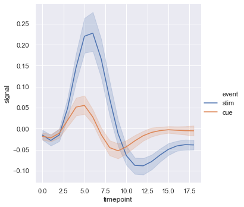
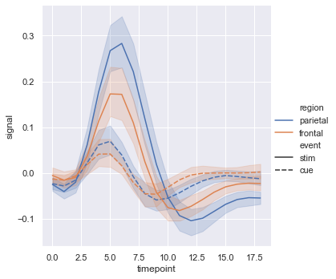
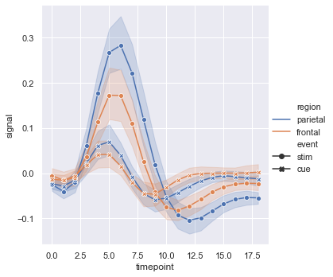
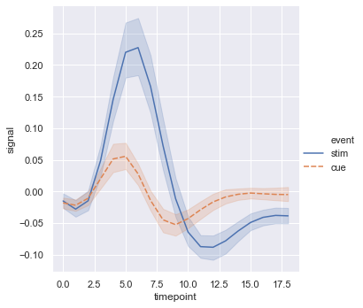
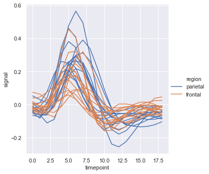
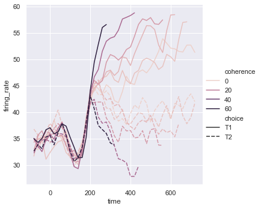
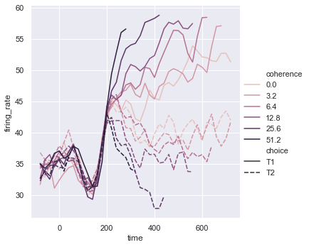
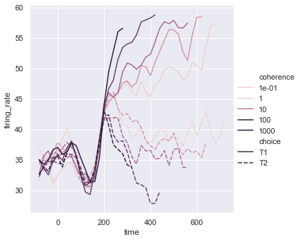
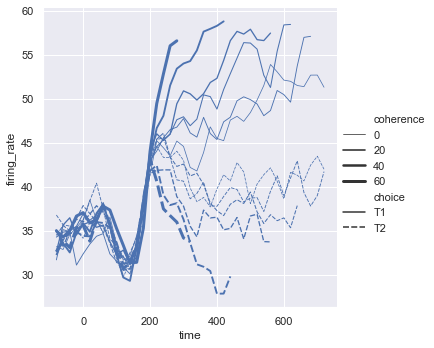
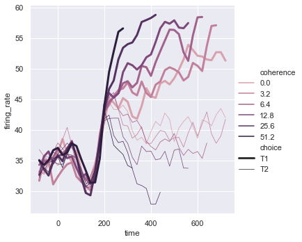

Plotting subsets of data with semantic mappings
import numpy as np
import pandas as pd
import matplotlib.pyplot as plt
import seaborn as sns
sns.set(style="darkgrid")fmri = sns.load_dataset("fmri")
sns.relplot(x="timepoint", y="signal", hue="event", kind="line", data=fmri);
sns.relplot(x="timepoint", y="signal", hue="region", style="event",
kind="line", data=fmri);
sns.relplot(x="timepoint", y="signal", hue="region", style="event",
dashes=False, markers=True, kind="line", data=fmri);
sns.relplot(x="timepoint", y="signal", hue="event", style="event",
kind="line", data=fmri);
sns.relplot(x="timepoint", y="signal", hue="region",
units="subject", estimator=None,
kind="line", data=fmri.query("event == 'stim'"));
dots = sns.load_dataset("dots").query("align == 'dots'")
sns.relplot(x="time", y="firing_rate",
hue="coherence", style="choice",
kind="line", data=dots);
dots = sns.load_dataset("dots").query("align == 'dots'")
sns.relplot(x="time", y="firing_rate",
hue="coherence", style="choice",
kind="line", data=dots);palette = sns.cubehelix_palette(light=.8, n_colors=6)
sns.relplot(x="time", y="firing_rate",
hue="coherence", style="choice",
palette=palette,
kind="line", data=dots);
from matplotlib.colors import LogNorm
palette = sns.cubehelix_palette(light=.7, n_colors=6)
sns.relplot(x="time", y="firing_rate",
hue="coherence", style="choice",
hue_norm=LogNorm(),
kind="line", data=dots);
sns.relplot(x="time", y="firing_rate",
size="coherence", style="choice",
kind="line", data=dots);
sns.relplot(x="time", y="firing_rate",
hue="coherence", size="choice",
palette=palette,
kind="line", data=dots);